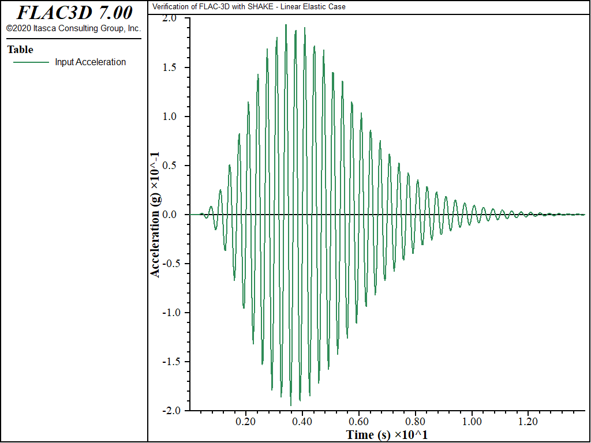
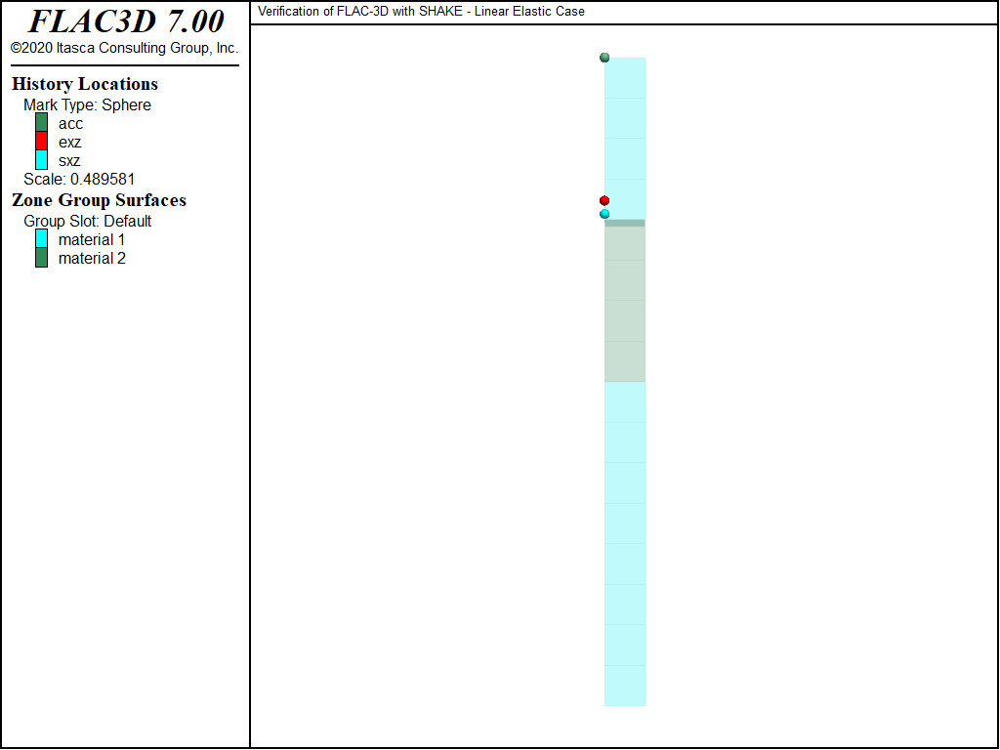
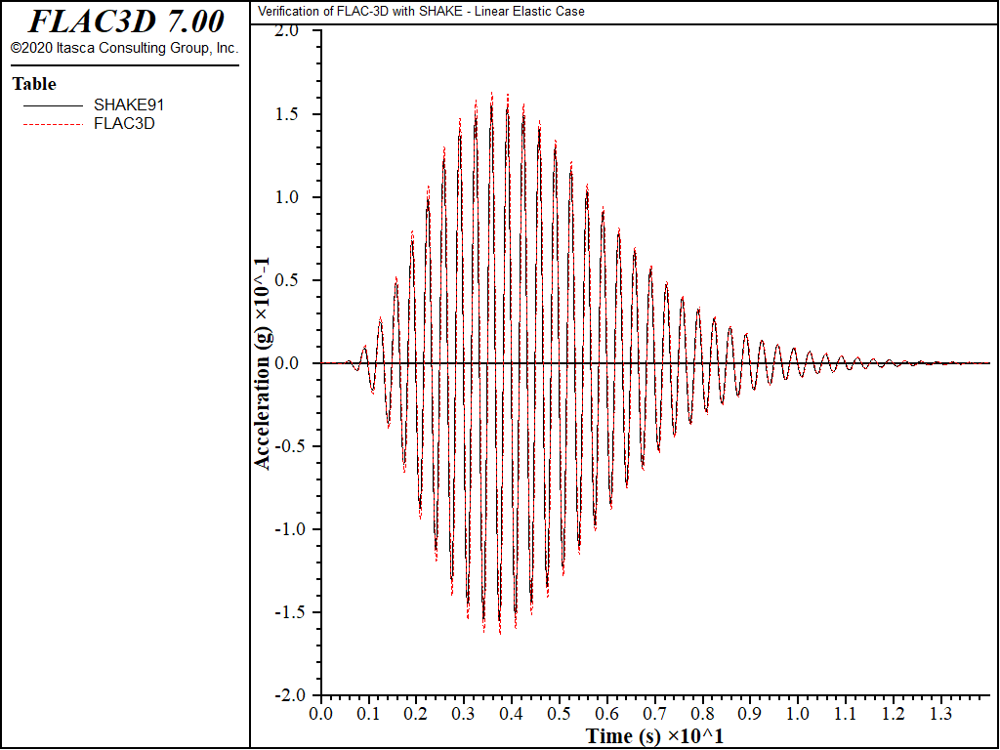
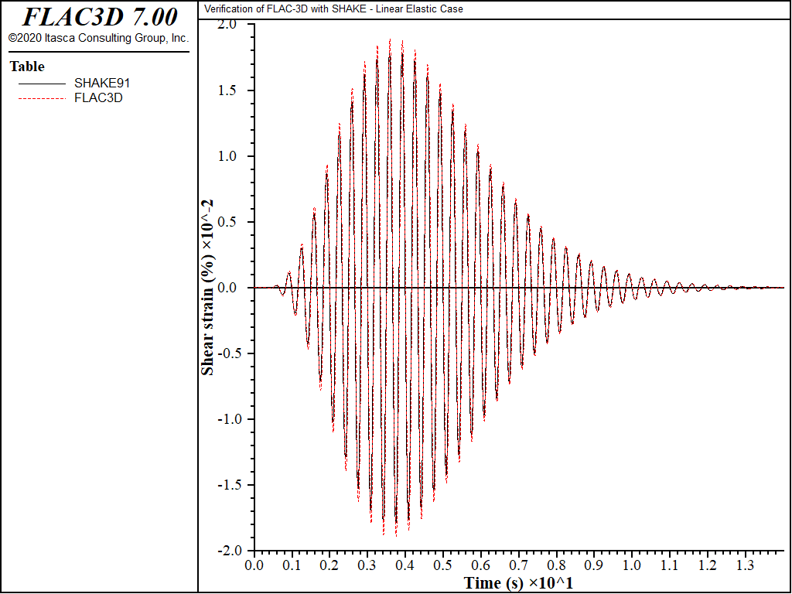
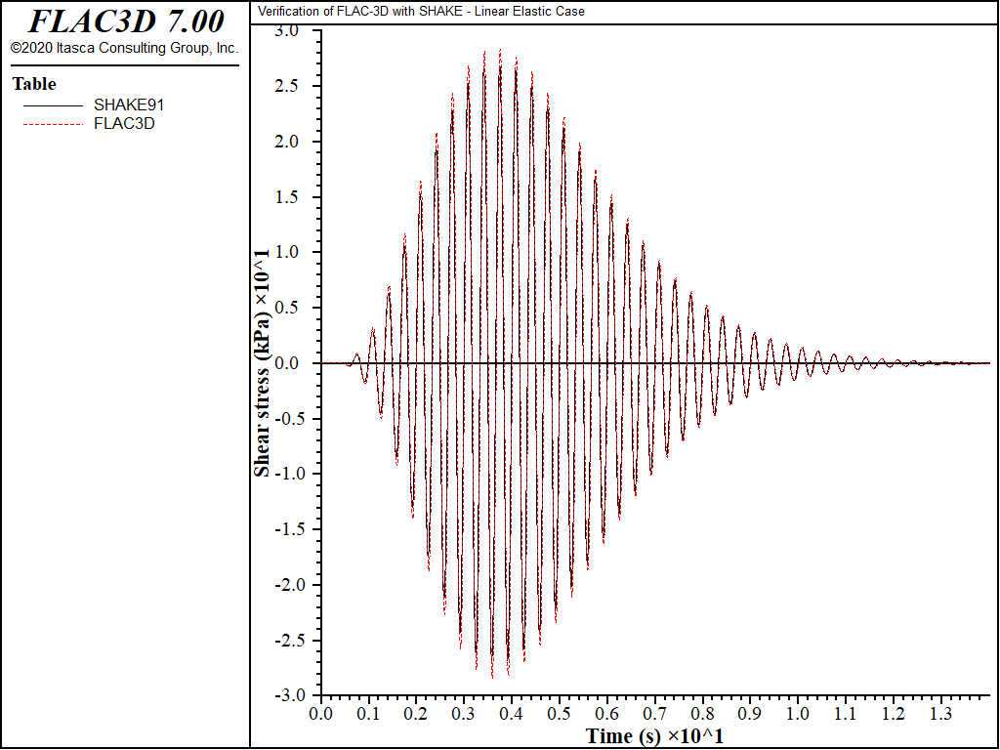

FLAC3D 与 SHAKE 对成层线弹性土层的比较
注意
本示例的项目文件可在 FLAC3D 中查看/运行。[1] 该项目的主数据文件见本示例末尾（main data files）。
程序 SHAKE 在地震工程领域广泛用于计算水平成层土层的 地震响应。此处，我们将 FLAC3D 与 SHAKE（Idriss 和 Sun 1992）就一维成层弹性土沉积层的情况进行比较， 该土层底部受到由下式给出的水平加速度激励，
| 其中： | \(\alpha\) | = | 2.2; |
| \(\beta\) | = | 0.375; | |
| \(\gamma\) | = | 8.0；以及 | |
| \(f\) | = | 3 Hz。 |
该输入加速度波（绘于 图 1（Figure 1））显示出 最大水平加速度 0.2 g，在 3.75 秒后达到。为本次对比试验选定的 波形不需要基线校正（见 基线校正（Baseline Correction））；最终速度和 位移均为零。该波形也不包含可能引起波的数值畸变的 高频成分（见 波传播（Wave Transmission））。


图 1：模型底部的输入加速度。
对比中使用的 SHAKE 版本为 SHAKE-91（Idriss 和 Sun 1992）。SHAKE-91 是 SHAKE 的修订版本，后者由加利福尼亚大学伯克利分校地震工程研究中心于 1971 年发布。SHAKE-91 计算 覆盖在均匀半空间之上、承受竖向传播剪切波的半无限水平成层土沉积层的响应。该程序在频率域进行线性分析； 采用迭代过程考虑土中的部分非线性效应。为便于对比，我们 假定土体是线性的。使用 SHAKE-91 进行分析的数据文件见 本示例末尾（at the end of this example）。
FLAC3D 与 SHAKE-91 就以下问题条件进行比较。成层土沉积层厚 160 英尺， 包含两种材料，如 图 2（Figure 2） 所示。较刚硬的层（材料 2）厚 40 英尺，起始于 40 英尺深度处，夹在较软的层（材料 1）之间。


图 2：包含两种材料的一维模型（图中也标出了历史记录位置）。
土体按线弹性材料处理，具有以下特性：
| 材料 | 1 | 2 |
| 剪切模量（MPa） | 150 | 300 |
| 密度（kg/m3） | 1800 | 2000 |
| 临界阻尼比（%） | 10 | 10 |
假定剪切模量和阻尼与应变无关，则在 FLAC3D 和 SHAKE-91 中使用相同的特性。
FLAC3D 模型由 16 个立方网格单元组成，每个高度为 10 英尺（3.05 m）； 网格单元长度远小于最长波长的 1/10，以保证准确的波 传播。模型两侧阻止竖向运动。Rayleigh 阻尼设为 10%，作用于 3 Hz 的中心频率。
图 3（Figure 3） 显示了模型顶部（FLAC3D 中的网格点 65，SHAKE-91 中的子层 1）的水平加速度随时间的变化。两条记录 非常相似；FLAC3D 计算的最大加速度为 0.160 g，而 SHAKE-91 计算的最大加速度为 0.156 g（相差 2.6%）。
图 4（Figure 4） 和 图 5（Figure 5） 显示了 35 英尺深度处（材料 1 内）剪应变和剪应力的演化。 FLAC3D 结果通过在网格单元 13 处记录 \(\sigma_{xy}\) 和 \(\epsilon_{xy}\) 的历史得到。SHAKE-91 结果使用程序中的分析选项 7 在 子层 5 顶部得到。两个程序的结果同样非常 相似，差异小于 4%。请注意，应力时程不包含 Rayleigh 阻尼贡献的 粘性分量。该分量存在于模型中，但 FLAC3D 和 SHAKE-91 都无法直接绘制。


图 3：模型顶部的水平加速度。


图 4：模型中 35 ft 深度处的剪应变历史。


图 5：模型中 35 ft 深度处的剪应力时程。
参考文献
Idriss, I. M., and Joseph I. Sun. User’s Manual for SHAKE-91. University of California, Davis, Center for Geotechnical Modeling, Department of Civil & Environmental Engineering (November 1992).
数据文件
F3ShakeLinearElasticCase.dat
;---------------------------------------------------------------------
; 动力问题“使用 SHAKE 验证 FLAC-3D”所用脚本文件
; 线弹性情况：层状土层模型
;---------------------------------------------------------------------
model new
model large-strain off
fish automatic-create off
model title "Verification of FLAC-3D with SHAKE - Linear Elastic Case"
model configure dynamic
;--- 网格生成 ---
zone create brick size 1,1,16
zone gridpoint initialize position (3.048,3.048,3.048) multiply
;--- 命名模型各区域 ---
zone group 'material 1'
zone group 'material 2' range position-z=24.38,36.58
zone face skin
;--- 模型与属性 ---
zone cmodel assign elastic
zone property bulk 150e6 shear 150e6 density 1800 range group 'material 1'
zone property bulk 300e6 shear 300e6 density 2000 range group 'material 2'
;--- 边界条件 ---
zone gridpoint fix velocity-y range group 'Bottom' not
zone gridpoint fix velocity-z range group 'Bottom' not
fish define acc_p ;--- 生成输入波的 FISH 函数 ---
local time = dynamic.time.total
acc_p = math.sqrt(0.375*math.exp(-2.2*time)*time^8)* ...
math.sin(6.0*math.pi*time)
end
zone face apply acceleration (1,0,0) fish acc_p range group 'Bottom'
;--- 历史记录 ---
model history name 'time' dynamic time-total
zone history name 'sxz' stress-xz position (0,0,37)
zone history name 'acc' acceleration-x position (0,0,48.768)
zone history name 'exz' strain-increment-xz position (0,0,38)
; --- 阻尼 ---
zone dynamic damping rayleigh 0.1 3.0
;--- 求解至 14 秒
model solve time-total 14.0
model save 'Shake'
SHAKE-91 成层土沉积层模型
option 1 - dynamic soil properties -
1
1
8 material modulus
0.0001 0.0003 0.001 0.003 0.01 0.03 0.1 5.0
1.000 1.000 1.000 1.000 1.000 1.000 1.000 1.000
8 damping
0.0001 0.0003 0.001 0.003 0.01 0.03 0.1 5.0
10.00 10.00 10.00 10.00 10.00 10.00 10.00 10.00
1 1
Option 2 -- Soil Profile
2
1 19 Example
1 1 10.00 3130.086 .100 .11225
2 1 10.00 3130.086 .100 .11225
3 1 10.00 3130.086 .100 .11225
4 1 5.00 3130.086 .100 .11225
5 1 5.00 3130.086 .100 .11225
6 1 5.00 6260.173 .100 .12473
7 1 5.00 6260.173 .100 .12473
8 1 10.00 6260.173 .100 .12473
9 1 10.00 6260.173 .100 .12473
10 1 10.00 6260.173 .100 .12473
11 1 10.00 3130.086 .100 .11225
12 1 10.00 3130.086 .100 .11225
13 1 10.00 3130.086 .100 .11225
14 1 10.00 3130.086 .100 .11225
15 1 10.00 3130.086 .100 .11225
16 1 10.00 3130.086 .100 .11225
17 1 10.00 3130.086 .100 .11225
18 1 10.00 3130.086 .100 .11225
19 1 .100 .14000 4000.
Option 3 -- input motion:
3
1400 2048 0.01 inp3.acc (1f10.6)
1.0 100. 2 1
Option 4 -- sublayer for input motion (within (1) or outcropping (0)):
4
19 0
Option 5 -- number of iterations & ratio of avg strain to max strain
5
1 2 0.65
Option 6 -- sublayers for which accn time histories are computed and saved:
6
1 2 3 4 5 6 7 8 9 10 11 12 13 14 15
0 1 1 1 1 1 1 1 1 1 1 1 1 1 1
1 0 0 0 1 0 0 0 0 1 0 0 0 0 0
Option 6 -- sublayers for which accn time histories are computed and saved:
6
16 17 17 19 19
1 1 1 1 0
0 0 0 0 1
option 7 -- sublayer for which shear stress or strain are computed & saved:
7
5 1 1 02048 -- stress in level 5
5 0 1 02048 -- strain in level 5
option 7 -- sublayer for which shear stress or strain are computed & saved:
7
7 1 1 02048 -- stress in level 7
7 0 1 02048 -- strain in level 7
execution will stop when program encounters 0
0
尾注
| [1] | 要在 FLAC3D 中查看该项目，请使用程序菜单。
⮡ FLAC |
⇐ Natural Periods of an Elastic Column | Comparison of FLAC3D to SHAKE for a Layered, Nonlinear-Elastic Soil Deposit ⇒
| 这些内容对您有帮助吗？… | FLAC3D © 2019, Itasca | 原文更新于 2020 年 10 月 8 日 |